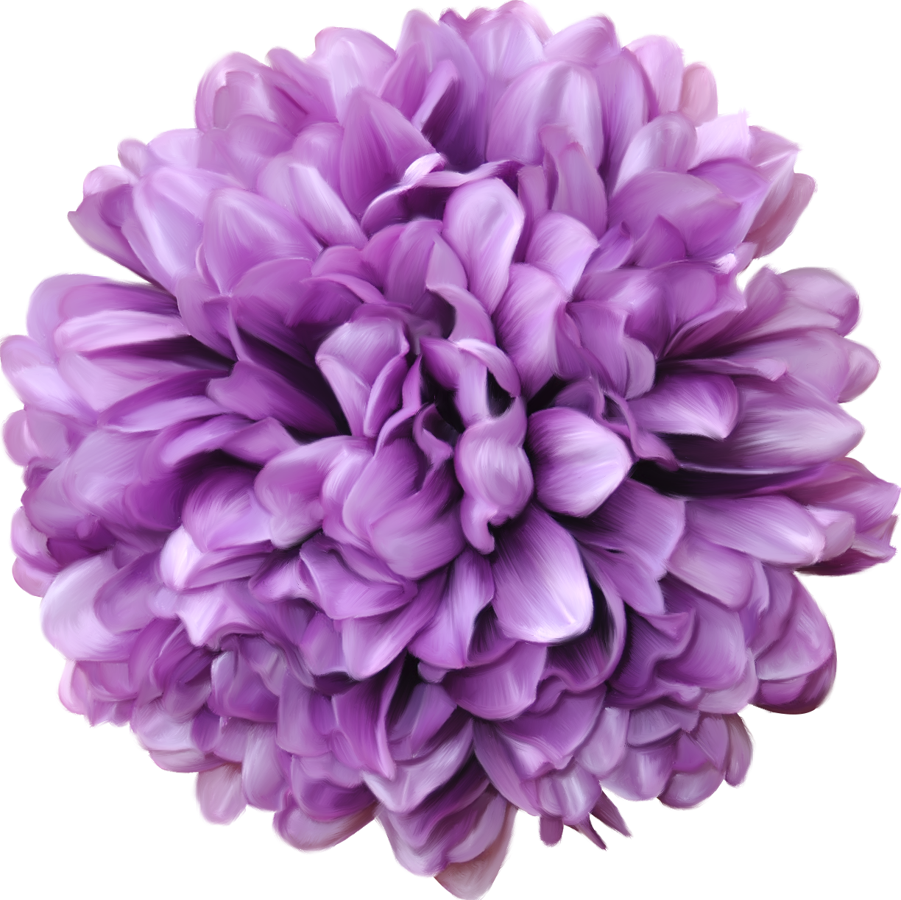
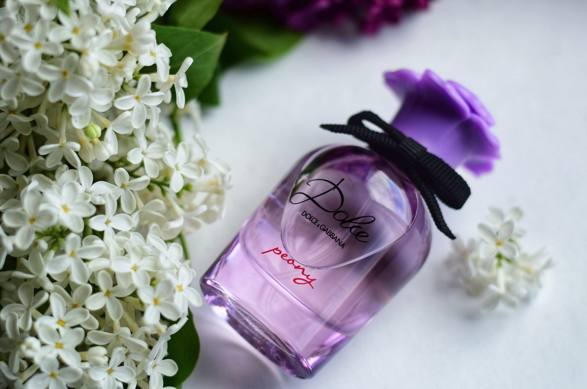

Dolce&Gabbana Dolce Peony Eau de Parfum — это свежий, бодрящий и нежный женственный цветок. Его аромат дарит взрыв радости в пышном пионовом саду.
Описание
Пион, символ позитивной энергии, вдохновивший создателей Dolce&Gabbana Dolce Peony
Eau de Parfum, оживает в элегантном и одновременно неожиданном аромате, способном выразить неповторимую
жизнерадостность, которая подчеркнута нотами желтой сливы и виргинского кедра.


Дизайн
В Dolce&Gabbana Dolce Peony Eau de Parfum флакон и культовая фигурная пробка окрашены
в яркий и вместе с тем нежный фиолетовый оттенок. Флакон украшен элегантной лентой грогрен.
НОТЫ
Dolce&Gabbana Dolce Peony Eau de Parfum: свежая,
бодрящая и упоительно женственная.
Аромат был создан Кристофом Рейно в эксклюзивном порядке для Dolce&Gabbana.
ВЕРХНИЕ НОТЫ
В верхних нотах чистое сияние груши сливается с цикламеном и бергамотом,
а затем встречает акцент розового перца, образуя утонченный и свежий аромат.
НОТЫ СЕРДЦА
В нотах сердца таится зной пиона. Его яркое звучание окутывает весь аромат, дополняясь свежестью
фрезии и природной чувственностью болгарской розы.
БАЗОВЫЕ НОТЫ
В базе Dolce&Gabbana Dolce Peony Eau de Parfum проступает самый мягкий момент: нежность нектара желтой сливы
заключает в объятия насыщенные ноты виргинского сандала, меда, амброксана и пачулей.